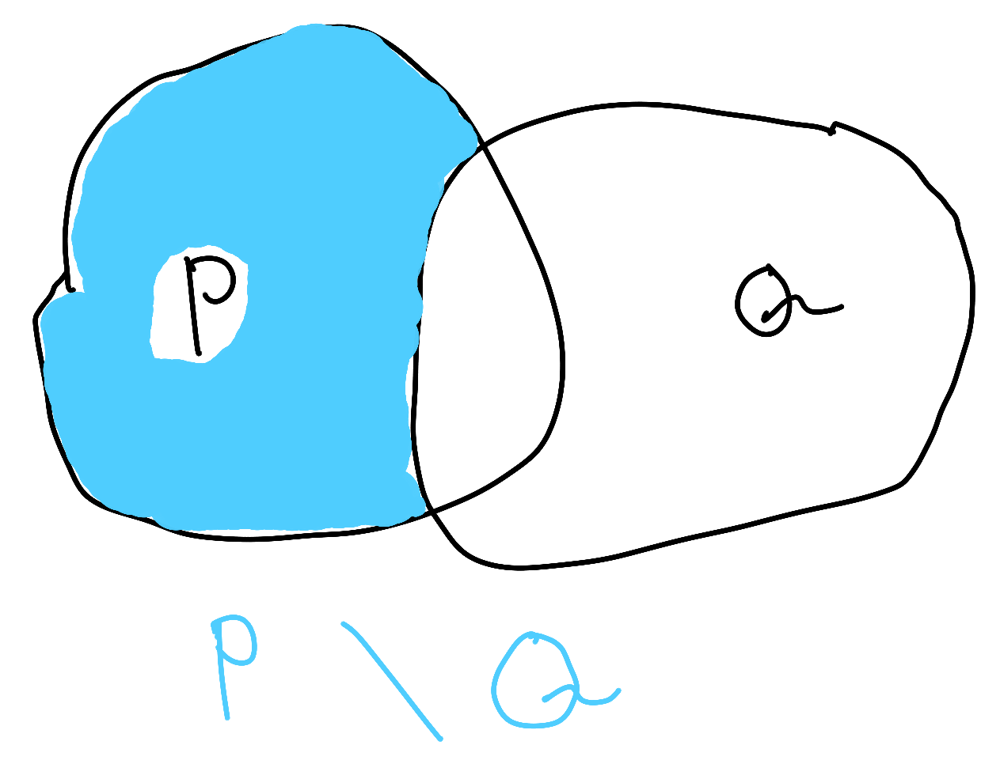
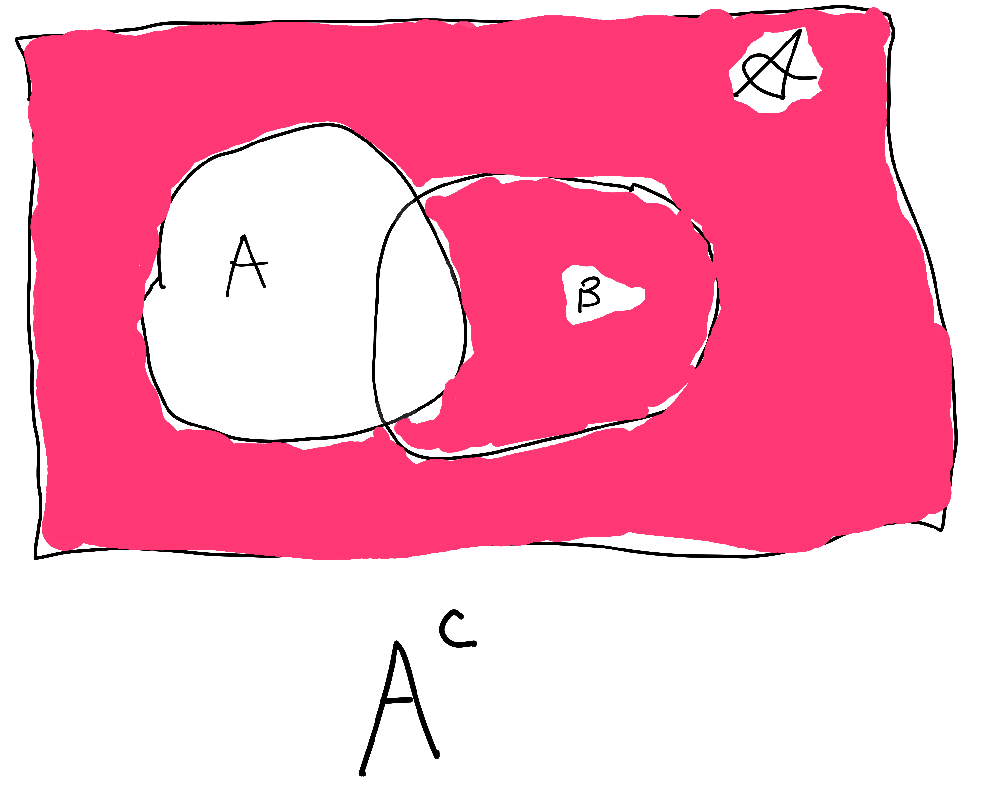

Copyright © 2014-2015
Permission is granted to copy, distribute and/or modify this document under the terms of the GNU Free Documentation License, Version 1.3 or any later version published by the Free Software Foundation; with no Invariant Sections, no Front-Cover Texts, and no Back-Cover Texts. A copy of the license is included in [gfdl].
[4em]2em
| Alexander G Bauer Randy Brown Nick Chambers Ng Wei En Anton Golov Ben Z RF |
[4em]2em
[intro] [ch:intro] [ch:introduction]
Before I bore you with a bunch of stuff you don’t care about, let’s do some math, shall we?
There are essentially three notions with which you need to be familiar in order to do anything interesting in math. These three things are , , and . Unfortunately, to be familiar with one, you have to be familiar with the other two.1
So, what are each of those things?
A is an unordered collection of things. There is also no repetition. For instance, { 2, 5 } is the same as { 5, 2 } (because order doesn’t matter). { 2, 5, 5 } would be the same set, because there’s no notion of multiplicity.
You see what I did there? I subtly introduced some notation: the bracket notation for sets. This math stuff really isn’t all that difficult. It’s also really interesting if you approach it the right way.
A is a mathematical construct (well, obviously, else I wouldn’t be talking about it). Basically, it takes some input, does something to it, and spits out some output. If you give the function the same input a bunch of times, you should get the same result each time. This concept is called “referential transparency.” If the function is not referentially transparent, then it’s not a function. It’s something else.
A is basically where you take a bunch of simple facts, called , and chain them together to make s. It’s sort of like sticking puzzle pieces together to form a picture.
The puzzle pieces (in this case, the axioms) aren’t usually very interesting on their own. However, the picture they form (in this case, the theorem) can be really cool and enlightening. The proof would be analogous to an explicit set of instructions explaining how to put the pieces together.
Once you are familiar with each of those concepts, we can do all sorts of cool stuff. Throughout the book, we will prove all of the following:
If you tap your finger against a bridge at exactly the right frequency, the bridge will collapse. (Resonance)
The formula used to calculate the interest rate on your mortgage is actually just a fancy form of the ratios of angles in a triangle. (Euler’s formula)
The best way to read this book is to just read it. Don’t skip sections, or look ahead, or anything like that. Just read it straight through. It’s also pretty important that you read the rest of this chapter. I promise it’s not too boring.
Do all of the exercises. There aren’t that many. However, they are pretty difficult. The exercises all have solutions, which are in [ex-solutions].
The exercises are designed to make you think, and widen your perspective on the topic at hand. They are not designed to be tedious. They are difficult, but the good kind of difficult.
It would be perfectly okay to just do the exercises (all of them), and then go back and read the text when you don’t understand something.
is a reference section. It contains every single theorem, definition, identity, and property in this book. Unlike the contents of this book, [appendix-d] is not meant to be read straight through. However, if you don’t remember the name of something, or want to know if some property is true, [appendix-d] is the place to look.
My writing strategy involves writing the bare minimum information, with criminally few examples or exercises, so I can get the structure right, then to go back and fill in the blanks. So, until this book is finished, it’s going to be horrifyingly fast paced.
[real-intro]
This is a math book. Well, duh. Why did I write it?
Most math (and science) books nowadays seem to value keeping an academic tone over ensuring that the reader understands the material, and — more importantly — enjoys reading the book.
I take the opposite approach. I want to create a book that is fun to read and easy to understand, while eschewing the practice of making myself look good.
In high school, and even in college, I noticed that subjects were taught with pragmatism in mind: here’s what you need to learn to have a job doing X. It completely zaps the intellectual curiosity of the students. I think that’s a shame. I hope reading this book will rekindle your intellectual curiosity.
The inspiration for this book is Learn You a Haskell for Great Good!, by Miran Lipovača. Haskell is a programming language, and LYAH is a great book for learning Haskell. If you are interested in a print copy of LYAH, see .
There is also an incomplete and unofficial Russian translation (https://github.com/gazay/lysa), courtesy of Alexey Gaziev.
In this book, I cover a lot of hard stuff.2 Sometimes, it’s useful to program your way through a problem. You don’t have to, but it helps. Every programmer will tell you that programming teaches a manner of thinking.
Many programmers will cite Steve Jobs’s3 famous quote, regarding the use of programming in his job,
[sic] …much more importantly, it had nothing to do with using [the programs we wrote] for anything practical. It had to do with using them to be a mirror of your thought process; to actually learn how to think. I think everybody in this country should learn how to program a computer — should learn a computer language — because it teaches you how to think.
That first sentence or two is actually a pretty good description of mathematics (and programming). Both are incredibly useful, and have endless practical applications.
That’s not the point, though. The whole usefulness thing is a side gig. It’s about learning how to think, and having a rigorous language through which to express your thoughts.
Furthermore, the rigor of the language helps you build upon your current thoughts to find out even cooler things. That’s what math (and programming) is about.
Sage (http://www.sagemath.org/) is a mathematically-oriented programming language. If you’re familiar with Mathematica or Maple, Sage is an open-source alternative.
Sage is perhaps most useful in generating graphs transparently. Sage is also capable of solving your equations, finding holes in your logic, the whole 9 yards.
I would include instructions for installing Sage. However, it takes up a lot of space, and my instructions would quickly be obselete. You can find better instructions for installing Sage on their website (http://wiki.sagemath.org/DownloadAndInstallationGuide).
Despite the fact that I used “I” in the first part of the book, LYSA is actually a community project, and many people participate in the writing of this book.
If you want to talk to us, or to other math people, come see us in #lysa on Freenode. If you don’t know what IRC is, or you don’t have a client set up, you can connect through Freenode’s webchat (http://webchat.freenode.net/?channels=lysa).
If you have any questions about LYSA (or math), feel free to ask in the IRC channel (#lysa on FreeNode in case you forgot).
If you want to submit a correction, or have some issue, or want to add some content, really anything having to do with the content of the book, you can visit our GitHub page (https://github.com/learnyou/lysa). We also have a website (http://learnyou.org) and a community on Reddit (https://lysa.reddit.com/).
This book is open-source. That means a number of things:
You are free to use this book as you like.
You are free to modify the book as you wish. The source is available at https://github.com/learnyou/lysa.
You are free to redistribute and/or sell exact copies of this book as you wish.
You are free to redistribute and/or sell modified copies of this book as you wish.
If, for instance, you are a schoolteacher and want to use this for your class, you are free to edit it to your liking and give the modified copy to your students. The only string I attach is, you have to allow anyone to whom you give the book do the same thing (i.e. they have to be free to copy/modify/change your version).
The explanation of why programming is useful is a good segue into discussing the target audience.
When I was first writing the book, I wrote it in an effort to strengthen my own understanding. So, the target audience was me. The very first versions of this book were about a abstractish branch of math called commutative algebra. Later on, it seemed more fitting to abstractly go over the basics of math. That’s what the current version of the book does.
That doesn’t answer the question: who is the target audience? Well, people who want to learn basic and intermediate algebra, and to learn why it’s so interesting.
I mentioned this in [real-intro]. Most books (and people) treat math as a tool you can use for calculations. I treat math as a language you can use to express your ideas. That’s the core difference. This book will hopefully give you an interest in math itself, rather than just a cursory knowledge of it.
With that in mind, my book is going to approach the topics much differently than other books on the same topic. I rely very much on abstraction and intuition.
It’s that you know all of the basics about arithmetic: you should know how to add, subtract, multiply, divide, and exponentiate. You should also be familiar with the following sets, although it’s not really hard to pick up:
ℕ := { 0, 1, 2, 3, 4, … }
${\mathbb{Z}}{:=}{\left\{\,\dots, {`}{4}, {`}{3}, {`}{2}, {`}{1}, 0,1,2,3,4, \dots \,\right\}}$
The real numbers ℝ.
The rational numbers ℚ.
The irrational numbers ${\mathbb{I}}{:=}{\mathbb{R}}\bs {\mathbb{Q}}$.
The complex numbers ℂ.
If not, you should look at [basic-arithmetic]. is more or less a blatant ripoff of . I would like to think that my appendix is much less dry, and does a bit more in the explaining department. Landau’s wonderful book is very dry. It’s just theorem after theorem after theorem. It’s very rigorous, but you’ll fall asleep after reading a page.
You don’t actually have to read this section, but it would be useful.
Things in monospace are either code snippets or commands to be run in a terminal. I have separate stylings for and inline code snippets. That said, they are separate but equal, at least for the time being.
The § symbol refers to a section. So § 3.2 means “chapter 3, section 2”.
Even though most of the writers are American, I still use the British convention of putting periods after quotation marks: “like this”. The British convention is less ambiguous. If you see the American convention anywhere in this book, please report it.
I will often recommend software. However, I will not recommend any non-libre software, or any software that costs money.
“I” refers to me. “We” refers to both me and you, the reader. “You” refers to, you guessed it, the reader. It’s the convention in academia to use the so-called “royal we”, such as “we subtract 2 from both sides of the equation to obtain the result …”.
Sometimes, we will accidentally use the royal we, out of habit. Crap, I just did it there! See? It’s very difficult to avoid. Like any of the other conventions herein, if you see it broken, please report the error to the authors. You can use the bug tracker (https://github.com/learnyou/lysa/issues/new), or, if you don’t want to make a gratis GitHub account, you can email me at peter@harpending.org.
Oh yeah, sometimes I’ll use monospace in things like URLs or emails for the sake of disambiguity.
Most of the authors use some version of Linux. Hence, when there are instructions for computer things (such as installing Haskell), I’ll write instructions for Linux, because that’s what I know. There are two solutions here:
You could try out Linux (it’s gratis, and it’s easy).
If you know how to do the thing on your OS, and there aren’t instructions for your OS, you could write up instructions and add them to the book. If you don’t know how to do that, you could bring it up in the bug tracker (https://github.com/learnyou/lysa/issues/new) or email me at peter@harpending.org.
If you see some number as a superscript in the middle of text: like this4, then the number refers to a footnote. If the superscript number is in the middle of math, it’s probably just math.
If there’s some number in brackets, like this: , then it’s a citation. If you’re reading this as a PDF, you can actually click on the number, and your PDF reader will take you to the relevant bibliography entry. Go ahead, check it out! I’ll wait. You can do the same thing for footnotes and URLs.5
[conventions]
If you see something , it’s usually a vocabulary word. Often there will be a term with a section number next to it: ([d-equality]), usually somewhere in [appendix-d]. is a reference section, which has theorems, vocabulary, identities, stuff like that. So, the reference to a section in [appendix-d] next to a term points to the relevant section in the appendix. Like all of the other references — citations, footnotes, URLs — you can click on the section title, and your PDF reader will take you there.
[booleans] [ch:booleans] [ch:bools]
Before we get into interesting content, you have to understand some stuff. This stuff is pretty easy. This will likely be one of the shorter and easier chapters in the book.
Most people think math is about dealing with numbers and pumping out formulas. Well, that’s not what math is about. As said in [intro], it’s about using math as a language to express your thoughts. Most people don’t think about numbers all day; thus, we deal with things in math that aren’t numbers.
In this next section, we’re going to outline some basic rules for reasoning about things. You need to know these rules to do really cool stuff. Although, as you will (hopefully) see, these rules can be fun to toy around with on their own.
It’s okay if you don’t remember all of these rules. You can always find a list in [d-booleans].
[props]
The first thing you need to understand is the notion that “if x is true, then y is also true. But, if y is true, it’s not necessarily true that x is false.” As always, mathematicians are too lazy to write this stuff out by hand, so they have notation for it.
$a \implies b$ means that “a implies b”. It doesn’t necessarily mean that b implies a. It means that if a is true, then b is also true.
Here’s an example:
If someone is decapitated, then they will die. So,
$$\text{Decapitated} \implies \text{Dead}$$
However, if someone is dead, it doesn’t necessarily mean that they were decapitated. They could have been shot, or stabbed, or had a heart attack. There are endless possibilities.
$a \impliedby b$ is the same as writing $b \implies a$. It’s sometimes convenient to use $a \impliedby b$ instead. $a \impliedby b$ should be read “a is implied by b”.
When I strike through some mathematical operator, like this: ${\centernot\implies}$, it means that you can semantically put “not” in front of whatever the operator says. So, ${\centernot\implies}$ means “not implies”. That doesn’t make much grammatical sense in English, so “does not imply” might be better. Nonetheless, you get the point.
Moving on from the example above:
$$\text{Decapitated} \implies \text{Dead}$$
If someone is decapitated, then they’re also dead (at least within a few seconds). However, if someone is dead, it’s not necessarily true that they were decapitated.
$$\text{Decapitated} {\centernot\impliedby}\text{Dead}$$
If something is not true, then I’ll put a ¬ in front of it. So, if I want to say that a is false, then I’ll write ¬a.
If I want to pose a question, I could just ask the question. For instance, “Is $\lnot\text{Decapitated}\impliedby\lnot\text{Dead}$ true?”.
However, that quickly becomes difficult, usually when there are multiple assertions in a mathematical expression, and you don’t know which one I’m asking about. Moreover, since I use the same font for text and math, if I have both, it might be hard to tell which is math and which is text. So, to help with ambiguity, I’ll put a ? over the operator I’m asking about:
$$\lnot \text{Decapitated} {\stackrel{?}{\impliedby}}\lnot\text{Dead}$$
See, that’s much easier.
Now, on to that question - Is “not decapitated” implied by “not dead”. Well, let’s think about it. If someone is not dead, then they couldn’t have been decapitated, because if they were decapitated, then they would be dead. Therefore, if someone is not dead, then they weren’t decapitated.
That word jumble was probably confusing. Mathematicians don’t like to be confused. I’ll make it symbolic for you.
If
$$\text{Decapitated} \implies \text{Dead}$$
then
$$\lnot \text{Decapitated} \impliedby \lnot\text{Dead}$$
This is another rule about propositional logic:
If
$$a \implies b$$
then
$$\lnot b \implies \lnot a$$
Okay, first of all, what the hell does the section title mean?
Let’s go over it:
the values true and false. “Boolean algebra” is what we are doing in this section. Dealing with Booleans.
Because the term is named after a guy named George Boole, who studied them to extent.
A is a set of things, where you can combine the individual things together. Additionally, there has to be a .
Well, let me explain it at the end of the chapter.
So, sometimes we need to combine two pieces of logic together. There are two ways we can do this - logical-or and logical-and.
I put logical- in front of them, because the mathematical meaning is slightly different than the colloquial meaning.
Mathematicians are lazy, so we don’t like to write “logical-and” whenever we want to say it, so instead we use the symbol ∧ .
A ∧ B is true if (and only if) both A and B are true. If one of them is false, then the entire thing is false.
On the other side, we have logical-or. The symbol for logical-or is ∨ . A ∨ B is true if either A or B is true, or if both of them are true. You could think of logical-or as being equivalent to the colloquial “and/or”.
If you’re having trouble remembering which symbol is logical-and and which one is logical-or, remember that the logical-and symbol — ∧ — looks vaguely like an A.
There are formal ways to define ¬, ∧ and ∨
I’m going to introduce a symbol: := . It means “is defined to be equal to”.
x := y
means “x is defined to be equal to y”.
With that in mind, here is a more formal definition of ∧ :
rclcl & & _ & :=&
& & x & :=& x
The _ just means “you can ignore whatever goes here”.
Likewise, for ∨ :
rclcl & & _ & :=&
& & x & :=& x
and finally for ¬:
rlcl & (x) & :=& x
& & :=&
There are a lot of properties about ¬, ∧ , and ∨ . Most of them are pretty intuitive, so you won’t have trouble memorizing them. You should try to remember the names of the properties, but it’s not really that important.
For all Boolean values a,
¬¬a = a
I mentioned this before somewhere in [props]. This is so simple that it’s impossible to prove. Thus, it’s called an or .
For all Boolean values a,
a ∧ a = a
Likewise, for all a,
a ∨ a = a
This is called the .
For all a, b, and c,
a ∧ (b ∧ c) ≡ (a ∧ b) ∧ c
For all a and b:
a ∧ b ≡ b ∧ a
a ∧ (b ∨ c) ≡ (a ∧ b) ∨ (a ∧ c)
¬(a ∧ b) ≡ ¬a ∨ ¬b
a ∨ a ≡ a
a ∨ (b ∨ c) ≡ (a ∨ b) ∨ c
a ∨ b ≡ b ∨ a
These values, true and false, are called . They are named after a mathematician named George Boole who studied them to extent.
I’m going to introduce some new notation: the ⇔ symbol.
$${\left(A \iff B\right)} \iff {\left(A \implies B\right)} \land {\left(A
\impliedby B\right)}$$
Okay, what the hell is that?
If
$$A \implies B$$
logical-and
$$B \implies A$$
then
A ⇔ B
Likewise, if
A ⇔ B
then
$$A \implies B$$
logical-and
$$B \implies A$$
The symbol should be read as “if (and only if)”. Sometimes I’ll write the word iff — with two `f’s — that’s the same as “if (and only if)”.
In order to do the exercises (yes, there are exercises), you need to know these properties of .
For all a
$$a \implies a$$
So, if a is true, that means that a is true. Duh.
For all a, b, and c,
If
$$a \implies b$$
and
$$b \implies c$$
then
$$a \implies c$$
For this reason, we can write $a \implies b \implies c$ without any ambiguity.
Sometimes, mathematicians, such as myself, will use the symbol ∀ in the place of “for all”.
Okay, you got me!
{ True, False }, along with the operator ∧ is a monoid. Additionally, { True, False }, along with the operator ∨ forms a monoid.
The “monoidal identity” just means that if you take any a, and ∧ it with True, you’re going to get a back again.
The same thing happens with ∨ and False
For all Boolean values a,
a ∧ True = a
Likewise, for all Boolean values a,
a ∨ False = a
[ch:sets]
In math, it’s often useful to consider of objects. There are basically two types of collections: and . Sets are unordered, and multiplicity doesn’t matter. Vectors are ordered, and multiplicity does matter.
For instance, { 3, 4 } and { 4, 3 } are the same , but $\mvec{3,4}$ and $\mvec{4,3}$ are different .
Likewise, { 20, 38 } and { 38, 20, 38, 20, 20, 20, 20, 20 } are the same . You guessed it, $\mvec{20,38}$ and $\mvec{38,20,38,20,20,20,20,20}$ are different . Sets are — at least ostensibly — much more important. More importantly, they are much easier to understand.
Sets were first studied to extent by Georg Cantor, a German mathematician, in the second half of the nineteenth century. Back in his own day, the results Cantor found by studying sets were considered so thoroughly bizarre that many of his colleagues simply refused to believe that Cantor could be right. In the end, Cantor turned out to be right all along. His ideas can be found in any introductory text on mathematics—including this one.
You probably figured it out from above: the notation is { Braces } for sets, and $\mvec{\text{Parentheses}}$ for vectors.
If you can’t remember whether to use braces {the curly things}, or parentheses (the round things), remember: I don’t have a horrible pun having to do with parentheses and vectors, and for that, I apologize.
Let’s invent a set.
Q = { 7, 7, 9, 5, 10, 1, 6, 6, 2, 10 }
There we go. Remember, order and multiplicity don’t matter. But, for the sake of clarity, let’s put the elements in order, and deduplicate them.
Q = { 1, 2, 5, 6, 7, 9, 10 }
Yay! You may have noticed that I slipped in the word into the previous sentence. Objects in the set are called . Yay, we figured out what that word means!
It’s too strenuous on our weak mathematical hands to write “10 is an element of Q”, so instead we have the symbol ∈ . ∈ is a very terrible attempt at drawing an E. If you can’t remember what ∈ is, think ``
lement of”.6
So, I’m going to ask you a question:
$$11 {\stackrel{?}{\in}}Q$$
(See, I used that thing from earlier with the question mark. I told you it would help.) Well, the answer is no, 11 is not an element of Q. As always, mathematicians are too weak to write “11 is not an element of Q” every time they want to say it, so instead they write
11 ∉ Q
By contrast,
6 ∈ Q
What if we want to say “both 6 and 2 are elements of Q”? Well, again, we could write it out like:
(6 ∈ Q) ∧ (2 ∈ Q)
But that’s too cumbersome, so instead we’ll write
2, 6 ∈ Q
Only if we put parentheses or braces around 2 or 6.
{ 2, 6 } ∈ Q
That’s confusing, don’t do that (yet).
There’s one more thing I need to go over, which is the null set - it’s the simplest set, as it contains no elements. “Null set” takes too long to write, so we use ${\varnothing}$ instead.
Remember when I said { 2, 6 } ∈ Q, and we were really confused? In case you don’t remember, Q = { 1, 2, 5, 6, 7, 9, 10 }. { 2, 6 } is obviously not an element of Q. However, { 2, 6 } is Q but it’s not an element. It’s weird. How do we express this notion?
The answer is with . “sub” means “smaller”, so a “subset” would be a “smaller set”. A is a subset of B is all of the elements in A are also in B. The notation is A ⊆ B. Some people will read that as “A is contained in B”.
Referring to the previous example,
{ 2, 6 } ⊆ Q
So, actually, there are two types of subsets - and . A ⊆ B is for improper subsets. A ⊂ B is for proper subsets. What’s the difference, then?
A ⊆ B allows for the possibility that A = B. A ⊂ B means that B is than A; there are some elements in B that are not in A.
[exists] I’ve already defined ∀ in [forall]. I’m now going to add another symbol, ∃, which means “exists”. I mention ∀, because ∃ is used in the same context.
Anyway, back to business. I use ⊆ for improper subsets, and ⊂ for proper subsets. However, some people will use ⊂ for improper subsets, and something like $\subsetneq$ or $\subsetneqq$ for proper subsets. You have to look out.
Here’s something cool: ${{\varnothing}}$ has no elements, so it’s a subset of every set.
$${{\varnothing}}{\subseteq}A {{;\;}\forall}A$$
I’m sure you can figure this out, two sets are equal iff they have the same elements. A ⊆ B means that B has all of the elements that A has. A ⊇ B would mean that A has all of the elements of B. So if both of those are true, then A = B. That is:
A = B ⇔ A ⊆ B ∧ A ⊇ B
So, what did we learn?
There are unordered collections with no multiplicity, called .
There are ordered collections with multiplicity, called .
Given an object o and a set A, you can ask $o {\stackrel{?}{\in}}A$.
You can pull smaller sets out of a set (I’ll show you the mechanics below). The way to express that a set is “embedded” in another set, without being an element is with . $A {\stackrel{?}{{\subseteq}}}B$ would be asking “are all of the elements in A also in B?”. (The converse doesn’t necessarily have to be true).
There’s a pretty easy set which has no elements, called ${{\varnothing}}$. An interesting property of ${{\varnothing}}$ is that it is a subset of all other sets.
Two sets are equal iff they have the same elements.
[ch:functions]
As promised, this chapter discusses functions.
So, what is a function?
So far, we’ve been dealing with - like 2, { 3, 2, 5 }, and 90. They are static. Static things are fine, but they aren’t very interesting. It’s much more interesting to examine — more specifically, things that change and .
Enter the ([d-functions]). It’s a mathematical construct. A function takes some input, and maps it to an output. Functions are sometimes referred to as or .
Let’s look at a simple function, which takes a number and adds 2 to it
f :
f = x + 2
Pretty simple, right? Okay, so what happens when we send 28 to f?
rcl f (x=28) & = & 28 + 2
& = & 30
Alternatively, since it’s obvious we’re working with x:
rcl f (28) & = & 28 + 2
& = & 30
This highlights an important property of functions: ([d-functions]). If you send a function the same input twice, you should get the same output both times. That is,
$$a = b \implies {f {\left(a\right)}} = \eva{f}{b}$$
Note that the opposite is not always true:
$$a = b {\centernot\impliedby}{f {\left(a\right)}} = \eva{f}{b}$$
(If that is true, then the function is ).
Using the lambda — λ — is common when I am using a function without giving it a name. However, usually I will use this notation:
f :
f (x) = x + 2
The whole f : ℤ → ℤ thing should be pretty obvious. If not, it means that f is a function that takes a member of ℤ (the whole numbers, both negative and positive), and takes it to another member of ℤ. Other people might use the notation
$${\mathbb{Z}}\stackrel{f}{\to} {\mathbb{Z}}$$
That notation is undoubtedly easier to understand. However, as we’ll see, that notation quickly becomes unfeasible.
With this in mind, if f : A → B, then A is the of f, written $\dom{f}$, and B is the of f, written $\codom{f}$.
With regard to the function we were just discussing
f :
f (x) = x + 2
ℤ is both the domain and the codomain. If this is the case, then we say that f is a .7 f is “closed under ℤ”, meaning that things can’t use f to escape from ℤ. f is closed.
If you can’t remember all of these terms, don’t worry, they are all listed in [d-functions].
Remember my explanation of vectors earlier? If not, vectors are like sets, but order and repetition matter.
Here’s a function that takes two arguments, and adds them to each other.
f :
f (x,y) = x + y
Pretty easy to understand, right?
If you haven’t figured it out from the context, the inputs to the function are called the .
Here’s a similar function that takes three arguments and adds them to each other
f :
f (x,y,z) = x + y + z
You can name your function anything you want, same with the arguments (it doesn’t have to be f). It’s just a common convention, which you don’t have to follow.
Good idea!
f :
f (x1, x2, x3, …, xn) = x1 + x2 + x3 + …+ xn
That however isn’t ideal, because we have no guarantee that the arguments in the …are actually integers. How about we have a of integers, and we just take the sum? This has the added benefit of less typing
f : ()
f (s) = s
So,
rcl f ({1,2,3,4,5}) & = & {1,2,3,4,5}
& = & 1 + 2 + 3 + 4 + 5
& = & 15
Mathematicians like to make themselves look smart. One such way is to invent fancy terms for simple things. One such term is the η-reduction.
Let’s look at that function we just had
f : ()
f (s) = s
Notice that we are repeating s on both sides of the equation. It would seem much simpler, and just as clear, to write:
f : ()
f =
That’s all an $\n$-reduction is: if you see an extraneous argument, you remove it to make things simpler. As long as we have the signature — the f : Set(ℤ) → ℤ thing – it’s pretty clear what f does. This is a prime example of mathematicians being both lazy and pretentious at the same time: a practice designed to allow us to be lazier, to which mathematicians have assigned a ridiculous name to make it sound hard.
$\n$ is the Greek letter eta; it’s pronounced “eight-uh”.
The ancient Greeks were too dumb to comprehend the concept of “eight”. Every time someone brought it up, they said “uh” immediately thereafter. The sound “eight-uh” became so common that they decided to make it a letter.
The Greeks’ poor comprehension of simple mathematics remains to this day, and is largely the reason for their current financial crisis.
If you ever take a physics course, you will undoubtedly notice that Greek letters are used frequently in physics. This is the physicists way of subtly hinting that they actually have no idea what they are talking about, and pleading for help from the mathematicians.
This entire idea where you take simple concepts and make them sound really fancy is called ([d-lambda-calculus]). If you hear people talk about “calculus”, they are talking about something else, not this. Nobody is pretentious enough to actually talk about λ calculus.
Anyway, here’s a brief summary of λ calculus. You can find this in [d-lambda-calculus], too. You might want to brush up on your Greek alphabet. I have a nice table of Greek letters in [d-greek-alphabet].
A way to write a function: λ( x, y ) → x + y
Changing the names of the arguments. For instance, you can write the above function as
λ( a, b ) → a + b
Partially calculating a result. For instance
λ( 2, y ) → 2 + y
Can be β reduced to
λ( y ) → 2 + y
Removing or adding extraneous free arguments. The last function
λ( 2, y ) → 2 + y
Can be η to
2 +
Which could then be η to
λ( 2, κ ) → 2 + κ
We sort of got side-tracked by toying around with sets and making fun of physicists. Hopefully that introduction introduced you to the basic concept of a function, and let you know that they can take multiple arguments
Let’s look at that function again:
f :
f (x,y,z) = x + y + z
What if you wanted to bind x = 3, but leave the rest “free”?
f :
f (x=3,y,z) = 3 + y + z
Okay, cool. We now have another function:
f (3) :
f (3,y,z) = 3 + y + z
So, actually, instead of needing 3 integers to do its job, f only needed one. However, instead of spitting out another integer, it spit out a function. So, we could write f’s signature as:
f : ( )
f (x,y,z) = x + y + z
Okay, that’s sort of weird and unintuitive. Let’s try writing f differently:
f : ( )
f = ( x + y + z)
Let’s look at the second half of that:
x + y + z :
(This assumes that we know what x is)
Let’s try splitting this up again:
( x + y + z) : ()
You give this function a value for y, and instead of giving you a value, it gives you another function, hence the signature ℤ → (ℤ → ℤ).
Let’s plug this back into f:
f : ()
f = ( ( x + y + z) )
So, instead of f taking three integers, it now only takes one, but spits out a function, which in turn spits out a function, which spits out an integer.
This idea of making a function into a chain of functions is called “Currying”. It’s named after a dead mathematician named Haskell Curry (ca. 1900-1982), who developed the technique. The programming language Haskell is also named after Mr. Curry.
Getting back to that function, those parentheses are somewhat burdensome, let’s get rid of them
rcl f & : &
f & = & x + y + z
f (x,y,z) & = & x + y + z
That’s much easier to read. It should be understood that the parentheses are right-associative: the parentheses “associate” rightward — i.e. it’s a → (b → (c → d)), not ((a → b) → c) → d.
That’s Currying for you.
[s:piecewise]
As a random aside, I’m going to introduce you to the . It’s a function whose definition changes based on the input.
q & : &
& :=& {
rcc & &
& & `()
.
Let’s look at $\eva{q}{0}$: 0 is even, so $\eva{q}{0} = \frac{0}{2} = 0$.
Let’s make a table:
$$\begin{tabu}{|c|c|c|} \hline
x & \eva{q}{x} & \text{$\eva{q}{x}$ reduced} \\ \hline
0 & {0 \div 2} & 0 \\
1 & {{{`}{{\left({{\left(1+1\right)} \div 2}\right)}}}} & {`}1 \\
2 & {2 \div 2} & 1 \\
3 & {{{`}{{\left({{\left(3+1\right)} \div 2}\right)}}}} & {`}2 \\
4 & {4 \div 2} & 2 \\
5 & {{{`}{{\left({{\left(5+1\right)} \div 2}\right)}}}} & {`}3 \\
6 & {6 \div 2} & 3 \\
7 & {{{`}{{\left({{\left(7+1\right)} \div 2}\right)}}}} & {`}4 \\
8 & {8 \div 2} & 4 \\
\hline
\end{tabu}$$
Hopefully you get this. It’s pretty simple.
I’ve been sort of dropping these vocabulary terms throughout the beginning of the chapter. That said, I’ll list them here, so you know where they are. (They’re also in [d-functions]).
All functions are — $a = b \implies {f {\left(a\right)}} = {f {\left(b\right)}}$
If f : A → B, then A is the of f and B is the of f.
If f : A → B, and there are no two distinct elements of A that map to the same thing in B, then f is .
f : A B
;a,b A a b f (a) = f (b)
If f : A → B, then the elements in B that can be expressed as f(x); x ∈ A form the .
f : A B
()f = {f (x) B;x A}
If the image of a function is equal to its codomain, then the function is .
f : A B
B = {f (x) B;x A}
If a function is both injective and surjective, then it is .
Some functions have . That is, if
f : A → B
()f : B A
()f, x = x ;x A
Remember that, because of currying, arc()f, x = arc()f(x). That is:
rcl f & : & A B
& : & (A B) B A
()f & : & B A
If a function has an inverse, it is said to be .
If a function is invertible, then the image of the inverse is called the .
[ch:more-sets]
By now, you hopefully have some idea into the basic intuition behind sets and functions. Moreover, you’ve proven some cool stuff about them – for instance, you proved that a function is invertible iff it is bijective.
That’s kind of cool, right? It’s much easier to verify that a function is bijective than it is to find its inverse. So, right off the bat, you can see if a function is invertible without trying to invert it. Despite what you may think, a common problem in math is to find inverse functions.
Speaking of functions, I’m going to define a really simple function:
: a a
(x) = x
That function is about as simple as functions get. It’s not a very interesting function, but it’s handy when defining things.
This is a slightly less simple function, but nonetheless important
: (a b c) b a c
=
It takes a function, f, which takes an a and a b, and then returns another function with the arguments flipped. You won’t usually see $\eva{{\mathrm{flip}}}{{\lambda{\left(\,x, y\,\right)} \to} x-y, 3, 5}$ floating around. Instead
rcl f & : & p q r
& : & q p r
Here’s an infix operator:
: (b c) (a b) a c
=
We’re going to look at some more stuff with sets.
First off, we have “set subtraction”. This is sometimes called the “relative complement”.
P \ Q = { x ∈ P; x ∉ Q }
$P \bs Q$ is all of the elements in P that are not in Q.

What would $P \bs P$ be, then? Well, ${{\varnothing}}$, of course, right!
$$P \setminus P = {\left\{\,x \in P {;\;}x \notin P\,\right\}} = {{\varnothing}}$$
Well, that looks like a contradiction, doesn’t it? Well, sort of. It’s a contradiction if you assume that P is nonempty — if you assume that there is some element in P — if an element is both in P and not in P, that would be madness! But, if you realize that the comprehension is the “set of objects satisfying the condition”, then you don’t encounter a contradiction. P \ P is the set of all objects in P that are not in P: there are no elements satisfying this condition, thus $P \bs P \equiv {{\varnothing}}$.
explains this idea graphically.
If P ⊂ 𝒜, then 𝒜 \ P is called the “ of P with respect to 𝒜”. Yes, that’s complment with an ’e’, not complment, with an ’i’.
I drew another diagram to illustrate the complement in [fig:complement].

In these exercises, you are going to prove every identity there is about sets.
The next thing we need to go over is a - it’s basically a way to double up on a set. So, say we have a set A, and another set B, the Cartesian product is the set of all 2-vectors, where the first element is from A, and the second element is from B.
: a b a,b
A B :={ x A y B}
It’s the class of all pairs of the elements in either set. It is actually a set, too, but I haven’t taught you enough to prove that. I also haven’t taught you what a class is. So, for the time being, know that the Cartesian product produces a set, but at the same time you don’t know that.
Let’s see some examples!
rccl {1,2,3} {4,5,6} & = & { &
& & , &
& & , &
& & , &
& & , &
& & , &
& & , &
& & , &
& & , &
& & } &
Alright, remember earlier when I told you to install Haskell? Well, if you didn’t, do it now: [intro-idris].
GHCi, version 7.8.4: http://www.haskell.org/ghc/ :? for help Loading package ghc-prim ... linking ... done. Loading package integer-gmp ... linking ... done. Loading package base ... linking ... done. Prelude>
GHCi is the Glasgow Haskell Compiler, interactive. It’s an interactive interpreter for Haskell.
If you want to change your prompt to something other than Prelude>, then write something like this:
Prelude> :set prompt “ghci: ” ghci:
If you want to do this permanently, add :set prompt “ghci: ” to .
I didn’t just have you open up GHCi for no good reason. It’s really easy to play with these Cartesian products in GHCi. This way, you can experiment.
Remember the definition of the Cartesian product:
$$A \times B {:=}{\left\{\,\mvec{x,y} \st x \in A \land y \in B\,\right\}}$$
Let’s try that example out. Math doesn’t directly translate into Haskell. Some of the syntax is a bit different.
ghci: [(a,b) | a <- [1,2,3], b <- [4,5,6]] [(1,4),(1,5),(1,6),(2,4),(2,5),(2,6),(3,4),(3,5),(3,6)] it :: (Num t1, Num t) => [(t, t1)]
That last line probably doesn’t show up for you. It’s just telling us the type of our expression. To have it show up automatically for you, run :set +t, or add it to .
There are a number of ways to actually work out the mechanics of the product. The simplest, and easiest way, is through . So, let’s go over the mechanics of { 1, 2, 3 } × { 4, 5, 6 }. You take the first element of the first set, in this case, 1, and take the Cartesian product of { 1 } and { 4, 5, 6 }:
$${\left\{\,1\,\right\}} \times {\left\{\,4,5,6\,\right\}} =
{\left\{\,
\mvec{1,4},
\mvec{1,5},
\mvec{1,6}
\,\right\}}$$
That’s unreadable
rccc {1} {4,5,6} & = & { &
& & , &
& & , &
& & } &
Pretty easy. Then you do the same thing with the second element.
rccc {2} {4,5,6} & = & { &
& & , &
& & , &
& & } &
You guessed it!
rccc {3} {4,5,6} & = & { &
& & , &
& & , &
& & } &
Then you take the union:
rcccc {1,2,3} {4,5,6} & = & & { & {1} {4,5,6},
& & & , & {2} {4,5,6},
& & & , & {3} {4,5,6},
& & & } &
I’m going to have to display the intermediate result in a separate thing, because it’s just awful if I try to smush it in with the rest:
$${\begin{array}{cc}
\{ & \mvec{{1},4} \\
, & \mvec{{1},5} \\
, & \mvec{{1},6} \\
\} & \\
\end{array}} \bigcup
{\begin{array}{cc}
\{ & \mvec{{2},4} \\
, & \mvec{{2},5} \\
, & \mvec{{2},6} \\
\} & \\
\end{array}} \bigcup
{\begin{array}{cc}
\{ & \mvec{{3},4} \\
, & \mvec{{3},5} \\
, & \mvec{{3},6} \\
\} & \\
\end{array}}$$
Which evaluates to
rccl {1,2,3} {4,5,6} & = & { &
& & , &
& & , &
& & , &
& & , &
& & , &
& & , &
& & , &
& & , &
& & } &
Okay, great. I hope you understand this so far. What happens when we take the product of a set with itself?
rccl {1,2,3} {1,2,3} & = & { &
& & , &
& & , &
& & , &
& & , &
& & , &
& & , &
& & , &
& & , &
& & } &
The Cartesian product of a set A with itself is usually denoted A2 instead of A × A. Like I said, we like to be lazy.
Okay, so, here’s something that doesn’t really fit in anywhere else. Now that you know what Cartesian products are, as well as vectors, I can introduce you to the . Basically, it’s a graphical representation of ℝ × ℝ:
I also put some vectors on there. That looks really crappy, let me draw that with a computer real quick:
The source code for that graph is in [src:vg2].
As far as conventions go, you always list the horizontal coordinate first, and the vertical coordinate second. Usually, the horizontal axis is labeled the x-axis, and the vertical axis is labeled the y-axis. Hence, the convention is to denote vectors on the plane as $\mvec{x,y}$
Okay, so given A × B, a point $\mvec{x,y}$ on the Cartesian coordinate plane represents the vector $\mvec{x,y}$, where x ∈ A, y ∈ B. With ℝ, a point $\mvec{x, y}$ on the plane is the vector $\mvec{x,y} \in {\mathbb{R}}^2$
So, how do we plot a function? Well, basically, given a function f : A → B, you plot $\mvec{x, \eva{f}{x}} \in A \times B$.
You plot the domain on the x-axis, and the codomain on the y-axis. You put the input value as the horizontal coordinate, and the output value as the y-coordinate.
For instance:
(λ( x ) → x2) : ℝ → ℝ
The source is in [src:x-squared].
Go to some point on the x-axis. Then go upwards from there until you hit the line. Let’s start with 8. Find 8 on the x-axis, then go up from there until you get to the line. If you look, the vertical coordinate of the line at that point is 64, which is the square of 8. That’s kind of cool.
Without further ado, we’re going to look at Georg Cantor’s work. Georg Cantor, if you remember from [ch:sets], is the guy who first studied sets. He came up with some bizzarre results.
First of all, long before Cantor, another guy, of whom you’ve likely heard, Galileo Galilei, came up with a paradox. Galileo Galilei is usually mononymously referred to as Galileo, mostly because it’s easier to type. Galileo is most famous for championing the idea that the earth revolves around the sun, and not the other way around. He spent his last days under house arrest because he believed that. Seventeenth century Italy didn’t really have the same free speech protections found today in the first world.
Anyway, I digress. Aside from his amazing work in physics, Galileo was among the first to point out an interesting fact about ℕ: there are as many perfect squares as there are natural numbers. That’s weird, because the perfect squares are a subset of the natural numbers.
ccccccc 1 & 2 & 3 & 4 & …& n & …
& & & & & &
1 & 4 & 9 & 16 & …& n2 & …
To be fair, Galileo wasn’t the first person to come up with this paradox, he was just among the first. He was the most famous person to come up with this paradox, hence why it’s named after him.
So, back to the real world: despite being a subset, the infinite set of perfect squares has as many elements as the infinite superset of natural numbers. Galileo decided that the only solution was to not consider words like “larger” or “smaller” when discussing infinite sets. Eventually, mathematicians started talking about “larger” and “smaller” in the context of infinite sets, just not the way Galileo would have.
If you want to look at this another way, we’ve found a bijection
f : {x y x = y2}
:=x2
Galileo, and later Cantor, decided that two sets have the same number of elements if there exists a bijection between them. Instead of saying “have the same number of elements”, we instead say “have the same cardinality”.
So, { 1, 2, 3 } has the same cardinality as { 4, 5, 6 }, because there’s a bijective relation between them.
(λ( x ) → x + 3) : { 1, 2, 3 } → { 4, 5, 6 }
If two sets are finite, as is the case with the previous example, their cardinality is just the number of elements. So, the cardinality of { 1, 2, 3 } is just 3. If two sets A and B have the same cardinality, then I’m going to write $A {\stackrel{\mathrm{c}}{=}}B$, which you should read as “A is cardinally equal to B”.
Do you remember that example function from [s:piecewise]?
q & : &
& :=& {
rcc & &
& & `()
.
$$\begin{tabu}{|c|c|c|} \hline
x & \eva{q}{x} & \text{$\eva{q}{x}$ reduced} \\ \hline
0 & {0 \div 2} & 0 \\
1 & {{{`}{{\left({{\left(1+1\right)} \div 2}\right)}}}} & {`}1 \\
2 & {2 \div 2} & 1 \\
3 & {{{`}{{\left({{\left(3+1\right)} \div 2}\right)}}}} & {`}2 \\
4 & {4 \div 2} & 2 \\
5 & {{{`}{{\left({{\left(5+1\right)} \div 2}\right)}}}} & {`}3 \\
6 & {6 \div 2} & 3 \\
7 & {{{`}{{\left({{\left(7+1\right)} \div 2}\right)}}}} & {`}4 \\
8 & {8 \div 2} & 4 \\
\hline
\end{tabu}$$
Wait wait wait!!!!! That’s a bijection! Holy crap! So ${\mathbb{N}}{\stackrel{\mathrm{c}}{=}}{\mathbb{Z}}$! That’s interesting! Again, despite ℕ ⊂ ℤ, ${\mathbb{N}}{\stackrel{\mathrm{c}}{=}}{\mathbb{Z}}$. That’s kind of cool.
Let’s plot that function:
Well that’s a bit hard to follow. Let’s draw a dotted line between each successive point:
Okay. Please note that since q : ℕ → ℤ, there aren’t intermediate values. The function only exists at the blue points. That is, you can’t evaluate $\eva{q}{2.5}$, because 2.5 ∉ N.
Anyway, the point is, we are able to enumerate through the values of ℤ, the same way we can with ℕ. We’ve found a bijection q : ℕ → ℤ, therefore ℕ = ℤ.
The cardinality of ℕ (and also ℤ) is called ℵ0, pronounced “aleph-null”. ℵ is the first letter of the Hebrew alphabet, called “aleph”.8
What about 𝕀? 𝕀 is seemingly more infinite than ℕ. ℕ and ℤ are discrete sets: it’s pretty easy to enumerate through them. 𝕀 is continuous though. Between any two values, there’s always an infinity of more values.
Let’s, for fun, try to list every single irrational number. If we can list every irrational number, then we must be able to enumerate through them, which would mean that ${\mathbb{N}}{\stackrel{\mathrm{c}}{=}}{\mathbb{I}}$
1.714761022369152... 4.008668726427755... 1.566116992594829... 1.519257059116716... 5.011643808251281... 6.533800807168559... 9.838685190958348... 3.424290398329045... 5.065089480002634... 6.972994377235255... 7.763147189141261... 8.374868221801194... 2.901203914856270... 9.734153197637937... 1.163373088314136... 1.489918657733841... 1.775506328996835... ...
I have to do it in monospace so that everything is aligned, sorry. Okay, let’s take the first number, 1.714761022369152..., and subtract 1 from its first digit: 0.714761022369152.... Okay, easy enough
Let’s do the same thing to the second number, with the second digit:
4.008668726427755... oops! It’s a 0. Well, let’s just make it cyclic - i.e. 0 − 1 ≅ 9.
So, we have 4.008668726427755... –> 4.908668726427755...
Let’s list what we have so far
1.714761022369152... -> 0.714761022369152... 4.008668726427755... -> 4.908668726427755... 1.566116992594829... 1.519257059116716... 5.011643808251281... 6.533800807168559... 9.838685190958348... 3.424290398329045... 5.065089480002634... 6.972994377235255... 7.763147189141261... 8.374868221801194... 2.901203914856270... 9.734153197637937... 1.163373088314136... 1.489918657733841... ...
0.9
So, for the nth number on the list, we change the nth digit. We’re also going to take the output of the flipping process, and list it in a new number at bottom. Let’s do this to a few more numbers, so you get the hang of it. I’m also going to add a space around the number I changed, to make it more obvious
1 .714761022369152... -> 0 .714761022369152... 4. 0 08668726427755... -> 4. 9 08668726427755... 1.5 6 6116992594829... -> 1.5 5 6116992594829... 1.51 9 257059116716... -> 1.51 8 257059116716... 5.011 6 43808251281... -> 5.011 5 43808251281... 6.5338 0 0807168559... -> 6.5338 9 0807168559... 9.83868 5 190958348... -> 3.424290 3 98329045... -> 5.0650894 8 0002634... -> 6.97299437 7 235255... -> 7.763147189 1 41261... -> 8.3748682218 0 1194... -> 2.90120391485 6 270... -> 9.734153197637 9 37... -> 1.1633730883141 3 6... -> ... 0.95849
Okay, you’re getting this! I’m sure you can figure out what the rest are:
1.714761022369152... -> 0.714761022369152... 4. 0 08668726427755... -> 4. 9 08668726427755... 1.5 6 6116992594829... -> 1.5 5 6116992594829... 1.51 9 257059116716... -> 1.51 8 257059116716... 5.011 6 43808251281... -> 5.011 5 43808251281... 6.5338 0 0807168559... -> 6.5338 9 0807168559... 9.83868 5 190958348... -> 9.83868 4 190958348... 3.424290 3 98329045... -> 3.424290 2 98329045... 5.0650894 8 0002634... -> 5.0650894 7 0002634... 6.97299437 7 235255... -> 6.97299437 6 235255... 7.763147189 1 41261... -> 7.763147189 0 41261... 8.3748682218 0 1194... -> 8.3748682218 9 1194... 2.90120391485 6 270... -> 2.90120391485 5 270... 9.734153197637 9 37... -> 9.734153197637 8 37... 1.1633730883141 3 6... -> 1.1633730883141 2 6... ... 0.95849427609582 ? ... -> 0.95849427609582 ? ...
Wait wait wait! We’ve made a new irrational number that’s different from all of the other numbers in at least 1 digit, right? It’s different from the first number in its first digit, it’s different from the second number in its second digit, and so on.
So, if we theoretically list all of the irrational numbers, in some sort of order, we can still make another irrational number that’s different than each of them by at least one digit. Thus, it’s impossible to list every single irrational number, because there’s always another one!
You can make the same argument for ℕ, sort of. There’s always another natural number, but it goes after all of the previous ones. With the irrational numbers, we can always make a new irrational number that goes somewhere in the middle of the set.
It’s like if there was a long line to get tickets for a football game. Every second, there’s a new person coming. With ℕ and ℤ, you can just stick the new person at the end of the line. With 𝕀, however, you can’t just stick the new person at the end, you have to put him at a definite spot in the middle.
When the ticket booth person needs to help the next person, it’s impossible to determine who to help next, because every second there’s a new person getting stuck in front of the person first in line. You can’t take down the names of the first 20 people in line, because there’s no concept of counting with the irrational numbers. That concept exists with the natural numbers. ℵ0 is defined by being “countably infinite” - 𝕀 is not countably infinite; it’s its own type of infinite.
So ${\mathbb{I}}{\stackrel{\mathrm{c}}{>}}{\mathbb{N}}$!
Because ℝ ⊃ 𝕀, it’s not possible that ℝ is countably infinite. There’s a part of ℝ that you can’t count, so you can’t count all of ℝ. Pretty simple:
Here’s where it gets interesting. If you remember, ℚ, the rational numbers, is all numbers that can be written as a ratio of $\frac{x}{y}$, where x, y ∈ ℤ, y ≠ 0. Incidentially, they are also numbers that follow some sort of pattern.
Well, that definition looks sort of familiar: What if we wrote ℚ this way:
$${\mathbb{Q}}= {\mathbb{Z}}\times {\left({\mathbb{Z}}\bs {\left\{\,0\,\right\}}\right)}$$
Where $\mvec{x,y} \in {\mathbb{Z}}\times {\left({\mathbb{Z}}\bs {\left\{\,0\,\right\}}\right)}$ maps to the fraction $\frac{x}{y}$.
We’ve done Cartesian coordinate planes of ℝ2 and ℕ × ℤ. Is there any reason we can’t do one of ${\mathbb{Z}}\times {\left({\mathbb{Z}}\bs {\left\{\,0\,\right\}}\right)}$?
Well, of course not!
Every blue dot at some point $\mvec{x,y}$ represents the fraction $\frac{x}{y}$. So, the dot at $\mvec{1,3}$ represents the fraction $\frac{1}{3}$. Note that there are no points on the line y = 0, because you can’t divide by zero.
So, can we enumerate through those? That is, follow some pattern that will eventually encapsulate every rational number? There’s no harm in trying!
The naïve way to do it would be to just head in one direction until you stop.
Of course, you never stop, so this won’t work.
With the ℕ → ℤ bijection, we sort of doubled back on ourselves:
Maybe let’s try that with this:
Hey! That works. If we keep going, we’ll enumerate through ℚ! So ${\mathbb{Q}}{\stackrel{\mathrm{c}}{=}}{\mathbb{N}}$!
Well, to be honest, I’m not sure. I wrote the script to generate the graph by doing some very shoddy programming, but I don’t know the associated function. How about, as an, um, exercise, I explain my logic?
Let’s look at that graph again:
Let’s call the hypothetical function that defines that bijection r
r : ℕ → ℚ
First of all, we start at the coordinate $\mvec{0,1}$. So we can write
$$\eva{r}{0} {:=}\mvec{0,1}$$
These are the bizarre results Cantor found, which his colleagues refused to believe.
The method I used to prove that 𝕀 was uncountable is called “Cantor’s diagonal argument”. He had proven years beforehand that ${\mathbb{I}}{\stackrel{\mathrm{c}}{>}}{\mathbb{N}}$, using a completely different method. The diagonal method is much more approachable, so I used that instead.
More importantly, you can use the diagonal argument in a variety of different ways. The most interesting such way is Russell’s paradox, which I’ll get to in the next chapter.
The conclusion to draw from this section is:
All infinite sets are infinite, but some are more infinite than others.
– George Orwell
[gfdl]
Version 1.3, 3 November 2008
Copyright © 2000, 2001, 2002, 2007, 2008 Free Software Foundation, Inc.
<http://fsf.org/>
Everyone is permitted to copy and distribute verbatim copies of this license document, but changing it is not allowed.
Preamble
The purpose of this License is to make a manual, textbook, or other functional and useful document “free” in the sense of freedom: to assure everyone the effective freedom to copy and redistribute it, with or without modifying it, either commercially or noncommercially. Secondarily, this License preserves for the author and publisher a way to get credit for their work, while not being considered responsible for modifications made by others.
This License is a kind of “copyleft”, which means that derivative works of the document must themselves be free in the same sense. It complements the GNU General Public License, which is a copyleft license designed for free software.
We have designed this License in order to use it for manuals for free software, because free software needs free documentation: a free program should come with manuals providing the same freedoms that the software does. But this License is not limited to software manuals; it can be used for any textual work, regardless of subject matter or whether it is published as a printed book. We recommend this License principally for works whose purpose is instruction or reference.
1. APPLICABILITY AND DEFINITIONS
This License applies to any manual or other work, in any medium, that contains a notice placed by the copyright holder saying it can be distributed under the terms of this License. Such a notice grants a world-wide, royalty-free license, unlimited in duration, to use that work under the conditions stated herein. The “Document”, below, refers to any such manual or work. Any member of the public is a licensee, and is addressed as “you”. You accept the license if you copy, modify or distribute the work in a way requiring permission under copyright law.
A “Modified Version” of the Document means any work containing the Document or a portion of it, either copied verbatim, or with modifications and/or translated into another language.
A “Secondary Section” is a named appendix or a front-matter section of the Document that deals exclusively with the relationship of the publishers or authors of the Document to the Document’s overall subject (or to related matters) and contains nothing that could fall directly within that overall subject. (Thus, if the Document is in part a textbook of mathematics, a Secondary Section may not explain any mathematics.) The relationship could be a matter of historical connection with the subject or with related matters, or of legal, commercial, philosophical, ethical or political position regarding them.
The “Invariant Sections” are certain Secondary Sections whose titles are designated, as being those of Invariant Sections, in the notice that says that the Document is released under this License. If a section does not fit the above definition of Secondary then it is not allowed to be designated as Invariant. The Document may contain zero Invariant Sections. If the Document does not identify any Invariant Sections then there are none.
The “Cover Texts” are certain short passages of text that are listed, as Front-Cover Texts or Back-Cover Texts, in the notice that says that the Document is released under this License. A Front-Cover Text may be at most 5 words, and a Back-Cover Text may be at most 25 words.
A “Transparent” copy of the Document means a machine-readable copy, represented in a format whose specification is available to the general public, that is suitable for revising the document straightforwardly with generic text editors or (for images composed of pixels) generic paint programs or (for drawings) some widely available drawing editor, and that is suitable for input to text formatters or for automatic translation to a variety of formats suitable for input to text formatters. A copy made in an otherwise Transparent file format whose markup, or absence of markup, has been arranged to thwart or discourage subsequent modification by readers is not Transparent. An image format is not Transparent if used for any substantial amount of text. A copy that is not “Transparent” is called “Opaque”.
Examples of suitable formats for Transparent copies include plain ASCII without markup, Texinfo input format, LaTeX input format, SGML or XML using a publicly available DTD, and standard-conforming simple HTML, PostScript or PDF designed for human modification. Examples of transparent image formats include PNG, XCF and JPG. Opaque formats include proprietary formats that can be read and edited only by proprietary word processors, SGML or XML for which the DTD and/or processing tools are not generally available, and the machine-generated HTML, PostScript or PDF produced by some word processors for output purposes only.
The “Title Page” means, for a printed book, the title page itself, plus such following pages as are needed to hold, legibly, the material this License requires to appear in the title page. For works in formats which do not have any title page as such, “Title Page” means the text near the most prominent appearance of the work’s title, preceding the beginning of the body of the text.
The “publisher” means any person or entity that distributes copies of the Document to the public.
A section “Entitled XYZ” means a named subunit of the Document whose title either is precisely XYZ or contains XYZ in parentheses following text that translates XYZ in another language. (Here XYZ stands for a specific section name mentioned below, such as “Acknowledgements”, “Dedications”, “Endorsements”, or “History”.) To “Preserve the Title” of such a section when you modify the Document means that it remains a section “Entitled XYZ” according to this definition.
The Document may include Warranty Disclaimers next to the notice which states that this License applies to the Document. These Warranty Disclaimers are considered to be included by reference in this License, but only as regards disclaiming warranties: any other implication that these Warranty Disclaimers may have is void and has no effect on the meaning of this License.
2. VERBATIM COPYING
You may copy and distribute the Document in any medium, either commercially or noncommercially, provided that this License, the copyright notices, and the license notice saying this License applies to the Document are reproduced in all copies, and that you add no other conditions whatsoever to those of this License. You may not use technical measures to obstruct or control the reading or further copying of the copies you make or distribute. However, you may accept compensation in exchange for copies. If you distribute a large enough number of copies you must also follow the conditions in section 3.
You may also lend copies, under the same conditions stated above, and you may publicly display copies.
3. COPYING IN QUANTITY
If you publish printed copies (or copies in media that commonly have printed covers) of the Document, numbering more than 100, and the Document’s license notice requires Cover Texts, you must enclose the copies in covers that carry, clearly and legibly, all these Cover Texts: Front-Cover Texts on the front cover, and Back-Cover Texts on the back cover. Both covers must also clearly and legibly identify you as the publisher of these copies. The front cover must present the full title with all words of the title equally prominent and visible. You may add other material on the covers in addition. Copying with changes limited to the covers, as long as they preserve the title of the Document and satisfy these conditions, can be treated as verbatim copying in other respects.
If the required texts for either cover are too voluminous to fit legibly, you should put the first ones listed (as many as fit reasonably) on the actual cover, and continue the rest onto adjacent pages.
If you publish or distribute Opaque copies of the Document numbering more than 100, you must either include a machine-readable Transparent copy along with each Opaque copy, or state in or with each Opaque copy a computer-network location from which the general network-using public has access to download using public-standard network protocols a complete Transparent copy of the Document, free of added material. If you use the latter option, you must take reasonably prudent steps, when you begin distribution of Opaque copies in quantity, to ensure that this Transparent copy will remain thus accessible at the stated location until at least one year after the last time you distribute an Opaque copy (directly or through your agents or retailers) of that edition to the public.
It is requested, but not required, that you contact the authors of the Document well before redistributing any large number of copies, to give them a chance to provide you with an updated version of the Document.
4. MODIFICATIONS
You may copy and distribute a Modified Version of the Document under the conditions of sections 2 and 3 above, provided that you release the Modified Version under precisely this License, with the Modified Version filling the role of the Document, thus licensing distribution and modification of the Modified Version to whoever possesses a copy of it. In addition, you must do these things in the Modified Version:
Use in the Title Page (and on the covers, if any) a title distinct from that of the Document, and from those of previous versions (which should, if there were any, be listed in the History section of the Document). You may use the same title as a previous version if the original publisher of that version gives permission.
List on the Title Page, as authors, one or more persons or entities responsible for authorship of the modifications in the Modified Version, together with at least five of the principal authors of the Document (all of its principal authors, if it has fewer than five), unless they release you from this requirement.
State on the Title page the name of the publisher of the Modified Version, as the publisher.
Preserve all the copyright notices of the Document.
Add an appropriate copyright notice for your modifications adjacent to the other copyright notices.
Include, immediately after the copyright notices, a license notice giving the public permission to use the Modified Version under the terms of this License, in the form shown in the Addendum below.
Preserve in that license notice the full lists of Invariant Sections and required Cover Texts given in the Document’s license notice.
Include an unaltered copy of this License.
Preserve the section Entitled “History”, Preserve its Title, and add to it an item stating at least the title, year, new authors, and publisher of the Modified Version as given on the Title Page. If there is no section Entitled “History” in the Document, create one stating the title, year, authors, and publisher of the Document as given on its Title Page, then add an item describing the Modified Version as stated in the previous sentence.
Preserve the network location, if any, given in the Document for public access to a Transparent copy of the Document, and likewise the network locations given in the Document for previous versions it was based on. These may be placed in the “History” section. You may omit a network location for a work that was published at least four years before the Document itself, or if the original publisher of the version it refers to gives permission.
For any section Entitled “Acknowledgements” or “Dedications”, Preserve the Title of the section, and preserve in the section all the substance and tone of each of the contributor acknowledgements and/or dedications given therein.
Preserve all the Invariant Sections of the Document, unaltered in their text and in their titles. Section numbers or the equivalent are not considered part of the section titles.
Delete any section Entitled “Endorsements”. Such a section may not be included in the Modified Version.
Do not retitle any existing section to be Entitled “Endorsements” or to conflict in title with any Invariant Section.
Preserve any Warranty Disclaimers.
If the Modified Version includes new front-matter sections or appendices that qualify as Secondary Sections and contain no material copied from the Document, you may at your option designate some or all of these sections as invariant. To do this, add their titles to the list of Invariant Sections in the Modified Version’s license notice. These titles must be distinct from any other section titles.
You may add a section Entitled “Endorsements”, provided it contains nothing but endorsements of your Modified Version by various parties—for example, statements of peer review or that the text has been approved by an organization as the authoritative definition of a standard.
You may add a passage of up to five words as a Front-Cover Text, and a passage of up to 25 words as a Back-Cover Text, to the end of the list of Cover Texts in the Modified Version. Only one passage of Front-Cover Text and one of Back-Cover Text may be added by (or through arrangements made by) any one entity. If the Document already includes a cover text for the same cover, previously added by you or by arrangement made by the same entity you are acting on behalf of, you may not add another; but you may replace the old one, on explicit permission from the previous publisher that added the old one.
The author(s) and publisher(s) of the Document do not by this License give permission to use their names for publicity for or to assert or imply endorsement of any Modified Version.
5. COMBINING DOCUMENTS
You may combine the Document with other documents released under this License, under the terms defined in section 4 above for modified versions, provided that you include in the combination all of the Invariant Sections of all of the original documents, unmodified, and list them all as Invariant Sections of your combined work in its license notice, and that you preserve all their Warranty Disclaimers.
The combined work need only contain one copy of this License, and multiple identical Invariant Sections may be replaced with a single copy. If there are multiple Invariant Sections with the same name but different contents, make the title of each such section unique by adding at the end of it, in parentheses, the name of the original author or publisher of that section if known, or else a unique number. Make the same adjustment to the section titles in the list of Invariant Sections in the license notice of the combined work.
In the combination, you must combine any sections Entitled “History” in the various original documents, forming one section Entitled “History”; likewise combine any sections Entitled “Acknowledgements”, and any sections Entitled “Dedications”. You must delete all sections Entitled “Endorsements”.
6. COLLECTIONS OF DOCUMENTS
You may make a collection consisting of the Document and other documents released under this License, and replace the individual copies of this License in the various documents with a single copy that is included in the collection, provided that you follow the rules of this License for verbatim copying of each of the documents in all other respects.
You may extract a single document from such a collection, and distribute it individually under this License, provided you insert a copy of this License into the extracted document, and follow this License in all other respects regarding verbatim copying of that document.
7. AGGREGATION WITH INDEPENDENT WORKS
A compilation of the Document or its derivatives with other separate and independent documents or works, in or on a volume of a storage or distribution medium, is called an “aggregate” if the copyright resulting from the compilation is not used to limit the legal rights of the compilation’s users beyond what the individual works permit. When the Document is included in an aggregate, this License does not apply to the other works in the aggregate which are not themselves derivative works of the Document.
If the Cover Text requirement of section 3 is applicable to these copies of the Document, then if the Document is less than one half of the entire aggregate, the Document’s Cover Texts may be placed on covers that bracket the Document within the aggregate, or the electronic equivalent of covers if the Document is in electronic form. Otherwise they must appear on printed covers that bracket the whole aggregate.
8. TRANSLATION
Translation is considered a kind of modification, so you may distribute translations of the Document under the terms of section 4. Replacing Invariant Sections with translations requires special permission from their copyright holders, but you may include translations of some or all Invariant Sections in addition to the original versions of these Invariant Sections. You may include a translation of this License, and all the license notices in the Document, and any Warranty Disclaimers, provided that you also include the original English version of this License and the original versions of those notices and disclaimers. In case of a disagreement between the translation and the original version of this License or a notice or disclaimer, the original version will prevail.
If a section in the Document is Entitled “Acknowledgements”, “Dedications”, or “History”, the requirement (section 4) to Preserve its Title (section 1) will typically require changing the actual title.
9. TERMINATION
You may not copy, modify, sublicense, or distribute the Document except as expressly provided under this License. Any attempt otherwise to copy, modify, sublicense, or distribute it is void, and will automatically terminate your rights under this License.
However, if you cease all violation of this License, then your license from a particular copyright holder is reinstated (a) provisionally, unless and until the copyright holder explicitly and finally terminates your license, and (b) permanently, if the copyright holder fails to notify you of the violation by some reasonable means prior to 60 days after the cessation.
Moreover, your license from a particular copyright holder is reinstated permanently if the copyright holder notifies you of the violation by some reasonable means, this is the first time you have received notice of violation of this License (for any work) from that copyright holder, and you cure the violation prior to 30 days after your receipt of the notice.
Termination of your rights under this section does not terminate the licenses of parties who have received copies or rights from you under this License. If your rights have been terminated and not permanently reinstated, receipt of a copy of some or all of the same material does not give you any rights to use it.
10. FUTURE REVISIONS OF THIS LICENSE
The Free Software Foundation may publish new, revised versions of the GNU Free Documentation License from time to time. Such new versions will be similar in spirit to the present version, but may differ in detail to address new problems or concerns. See http://www.gnu.org/copyleft/.
Each version of the License is given a distinguishing version number. If the Document specifies that a particular numbered version of this License “or any later version” applies to it, you have the option of following the terms and conditions either of that specified version or of any later version that has been published (not as a draft) by the Free Software Foundation. If the Document does not specify a version number of this License, you may choose any version ever published (not as a draft) by the Free Software Foundation. If the Document specifies that a proxy can decide which future versions of this License can be used, that proxy’s public statement of acceptance of a version permanently authorizes you to choose that version for the Document.
11. RELICENSING
“Massive Multiauthor Collaboration Site” (or “MMC Site”) means any World Wide Web server that publishes copyrightable works and also provides prominent facilities for anybody to edit those works. A public wiki that anybody can edit is an example of such a server. A “Massive Multiauthor Collaboration” (or “MMC”) contained in the site means any set of copyrightable works thus published on the MMC site.
“CC-BY-SA” means the Creative Commons Attribution-Share Alike 3.0 license published by Creative Commons Corporation, a not-for-profit corporation with a principal place of business in San Francisco, California, as well as future copyleft versions of that license published by that same organization.
“Incorporate” means to publish or republish a Document, in whole or in part, as part of another Document.
An MMC is “eligible for relicensing” if it is licensed under this License, and if all works that were first published under this License somewhere other than this MMC, and subsequently incorporated in whole or in part into the MMC, (1) had no cover texts or invariant sections, and (2) were thus incorporated prior to November 1, 2008.
The operator of an MMC Site may republish an MMC contained in the site under CC-BY-SA on the same site at any time before August 1, 2009, provided the MMC is eligible for relicensing.
ADDENDUM: How to use this License for your documents
To use this License in a document you have written, include a copy of the License in the document and put the following copyright and license notices just after the title page:
Copyright © YEAR YOUR NAME. Permission is granted to copy, distribute and/or modify this document under the terms of the GNU Free Documentation License, Version 1.3 or any later version published by the Free Software Foundation; with no Invariant Sections, no Front-Cover Texts, and no Back-Cover Texts. A copy of the license is included in the section entitled “GNU Free Documentation License”.
If you have Invariant Sections, Front-Cover Texts and Back-Cover Texts, replace the “with … Texts.” line with this:
with the Invariant Sections being LIST THEIR TITLES, with the Front-Cover Texts being LIST, and with the Back-Cover Texts being LIST.
If you have Invariant Sections without Cover Texts, or some other combination of the three, merge those two alternatives to suit the situation.
If your document contains nontrivial examples of program code, we recommend releasing these examples in parallel under your choice of free software license, such as the GNU General Public License, to permit their use in free software.
Now that that’s all out of the way, let’s talk a little about math. When this chapter is over, we’re going to dive right in to proving a bunch of things you already know to be true. We feel that without a little explanation, these proofs may leave you a little lost or confused. We’ll save the explanation of the proofs for later, but right now, we’re going to talk about how to actually learn math, and the proofs are a great example.
Most people’s experience with math is through their primary and possibly secondary education, which is or was a dreary affair in general, and math probably even moreso, unless you’re one of the lucky few. By lucky few, we don’t mean those wizards with a sort of inherent ability to do math–the first thing you need to know about learning math is that math is for everyone with a brain–that’s you, right? You see, your brain is a pattern recognition engine, and that’s all math is: the study of patterns. Unlike reading or history, your body comes with a biological imperative to know math. There’s some really great brain studies on the topic, but that’s boring, and I said we’re already done with the boring part, so let’s move on.
In that last paragraph, we presented what we hold to be the proper answer to ’what is math’: the study of patterns. This is completely different from most people’s interaction with math: in primary school, we are taught how to apply four operations to solve math problems. You’re given something about two trains leaving a station and going different speeds and different directions and yadda yadda yadda and before you know it your teacher turned everything into a math problem and it all seemed so forced–a layer on top of what was intuitive, and made everything complicated. We agree–this is a counterintuitive approach to math, and it makes math very confusing and disconnected. Math is just the study of patterns. That is, math is not so much a way to solve a set of problems that exist in a sphere apart from what is natural, but a way to understand what’s going on in the world around us. When you learn math, you should think of it as a science–another level of detail in the amazing world we live in.
That’s how this book is written. It’s written to reflect that math is a single unified study. While you’re reading it, try to think of how what you’re learning clarifies or refines early material. This is a big deal to us, because one thing we dislike most about the standard way of learning math is that at some point in everyone’s math career, they learn they were taught something that wasn’t actually true. We want to avoid that.
by
This book is written with a certain philosophy in mind. Explaining my philosophy will answer a number of questions I am often asked.
First, I’ll start with the license. he license I chose for this book is the GNU Free Documentation License (FDL). “Free” refers to freedom, not price. The FDL is similar in spirit to another license, the Creative Commons Attribution-ShareAlike License (CC-SA).
CC-SA is much more popular than the FDL, mostly because it is much more general. You could distribute a painting under CC-SA, but not the FDL. The CC-SA license and the FDL are both “copyleft” licenses, in that they require that derivative works be licensed under the same license.
The CC-SA license is too general to fit our purposes. The FDL is specifically designed for reference texts, so it has a clause requiring that the work be made available in source form. The CC-SA has no such requirement.
Freedom is important, especially in academic works. Part of the reason I wrote this book is that there are very few free textbooks.
To put it another way, it is of no benefit for the work to be nonfree.
If the work is free, I, as a writer, benefit from people giving me feedback, and improving upon my work.
You, as a reader, benefit from the freedom.
The only people who don’t benefit are distributors (e.g. a publisher). However, in the age of the internet, the need for a for-profit publisher isn’t exactly clear.
To be clear, it is perfectly okay for a publisher to publish this book, and to attempt to profit off of it. However, the publisher wouldn’t have the traditional nonfree monopoly over the book, which might discourage a publisher.
[appendix-d]
This appendix just lists identities, theorems, and stuff like that. It’s for reference, not for reading.
[d-equality]
a ≡ a
(a = b) ⇔ (b = a); ∀a, b
${\left(a = b\right)} \land {\left(b = c\right)} \implies {\left(a = c\right)} {{;\;}\forall}a,b,c$
means that a and b are the same thing.
means that a = b, for all a and b. a ≡ b should be read “a is identically equivalent to b”.
means that a is defined to be equal to b. In practice, this is the same as ≡ , but is semantically different.
[d-implications]
$a \implies a {{;\;}\forall}a$
${\left(a \implies b\right)} \land {\left(b \implies c\right)} \implies {\left(a \implies c\right)} {{;\;}\forall}a,b,c$
${\left(a \implies b\right)} \iff {\left(\lnot a \impliedby \lnot b\right)} {{;\;}\forall}a,b$
[d-booleans]
A is a value of either true or false. The study of Booleans is called . The rules for Booleans also work for propositions. The set of Booleans is often referred to as 𝔹 = { True, False }
a ∧ b is pronounced “a logical-and b”. It is true iff a and b are both true.
∧ : 𝔹 → 𝔹 → 𝔹
a ∨ b is pronounced “a logical-or b”. It is true if one or more of a and b are true.
∨ : 𝔹 → 𝔹 → 𝔹
¬a is pronounced “logical-not a”. ¬ takes true to false, and false to true.
¬ : 𝔹 → 𝔹
¬ ∘ ¬ ≡ id
Booleans are named after George Boole, who was the first to study them to any extent.
[d-booleans-land]
a ∧ a ≡ a
a ∧ (b ∧ c) ≡ (a ∧ b) ∧ c
a ∧ b ≡ b ∧ a
a ∧ (b ∨ c) ≡ (a ∧ b) ∨ (b ∧ c)
[d-booleans-lor]
a ∨ a ≡ a
a ∨ (b ∨ c) ≡ (a ∨ b) ∨ c
a ∨ b ≡ b ∨ a
a ∨ (b ∧ c) ≡ (a ∨ b) ∧ (b ∨ c)
This is a consequence of the distributive property mentioned in [d-booleans-land], De Morgan’s first law, and the cancellative property.
Start with the first property
a ∧ (b ∨ c) ≡ (a ∧ b) ∨ (b ∧ c)
Apply ¬ to both sides
¬(a ∧ (b ∨ c)) ≡ ¬((a ∧ b) ∨ (b ∧ c))
Apply De Morgan’s laws
¬a ∨ ¬(b ∨ c) ≡ ¬(a ∧ b) ∧ ¬(b ∧ c)
Do it again
¬a ∨ (¬b ∧ ¬c) ≡ (¬a ∨ ¬b) ∧ (¬b ∨ ¬c)
Let p, q, r = ¬a, ¬b, ¬c, respectively.
p ∨ (q ∧ r) ≡ (p ∨ q) ∧ (q ∨ r)
[d-booleans-demorgan]
¬(a ∧ b) ≡ ¬a ∨ ¬b
¬(a ∨ b) ≡ ¬a ∧ ¬b
Start with the first law
¬(a ∧ b) ≡ ¬a ∨ ¬b
Let p = ¬a, q = ¬b
p ∨ q ≡ ¬(¬p ∧ ¬q)
Apply ¬ to both sides of ≡
¬(p ∨ q) ≡ ¬p ∧ ¬q
[d-sets]
[d-set-definitions]
a ∪ b := { x ∈ 𝒜; x ∈ a ∨ x ∈ b }
a ∩ b := { x ∈ a; x ∈ b }
$a \bs b {:=}{\left\{\,x \in a {;\;}x \notin b\,\right\}}$
ac := { x ∈ 𝒜; x ∉ a }
[d-set-identities]
[d-unions]
$a \union a \equiv a$
$a \union {\left(b \union c\right)} \equiv {\left(a \union b\right)} \union c$
$a \union b \equiv b \union a$
[d-interects]
$a \intersect a \equiv a$
$a \intersect {\left(b \intersect c\right)} \equiv {\left(a \intersect b\right)} \intersect c$
$a \intersect b \equiv b \intersect a$
[d-set-subtraction]
$\mathbf{A \bs {\left(B \cap C\right)} \equiv {\left(A \bs B\right)} \union {\left(A \bs C\right)}}$
Let A, B, C ⊆ 𝒜.
A (B C) & :=& {x A;x }
& :=& {x A;x B y C}
(A B) (A C) & :=& { x x x }
& :=& { x }
$$x \in A \implies x \in {\mathscr{A}}$$
Therefore
(A B) (A C) & :=& { x A ;x B x C }
A (B C) & :=& {x A;x B y C}
A (B C) & & (A B) (A C)
$\mathbf{A \bs {\left(B \union C\right)} \equiv {\left(A \bs B\right)} \intersect {\left(A \bs C\right)}}$
A (B C) & :=& { x A ;x B x C }
(A B) (A C) & :=& { x x x }
& :=& { x A ;x B x C }
$\mathbf{A \bs {\left(B \bs C\right)} \equiv {\left(A \bs B\right)} \union {\left(A \intersect C\right)}}$
A (B C) & :=& { x A ;x }
& :=& { x A ;x B x C }
(A B) (A C) & :=& { x x x }
& :=& { x A ;x B x C }
$\mathbf{{\left(A \bs B\right)} \intersect C \equiv {\left(A \cap C\right)} \bs B \equiv A \intersect {\left(C \bs B\right)}}$
(A B) C & :=& { x x x C }
& :=& { x A ;x B x C }
(A C) B & :=& { x x x B }
& :=& { x A ;x B x C }
A (C B) & :=& { x A ;x B x C }
$\mathbf{{\left(A \bs B\right)} \union C \equiv {\left(A \union C\right)} \bs {\left(B \bs C\right)}}$
(A B) C & :=& { x x x C }
& :=& { x x C }
(A C) (B C) & :=& { x x x }
& :=& { x }
& :=& { x }
& :=& { x x C }
$\mathbf{A \bs A \equiv {{\varnothing}}}$
$$A \setminus A {:=}{\left\{\,x \in A \st x \notin A\,\right\}}$$
There are no elements in A that are also not in A, and the set with no elements is ${{\varnothing}}$.
$\mathbf{A \bs {{\varnothing}}\equiv A}$
$$A \bs {{\varnothing}}{:=}{\left\{\,x \in A \bs x \notin {{\varnothing}}\,\right\}}$$
${{\varnothing}}$, by definition has no elements, so all elements in A satisfy the condition $x \notin {{\varnothing}}$. Thus,
$$A \bs {{\varnothing}}\equiv A$$
$\mathbf{{{\varnothing}}\bs A \equiv {{\varnothing}}}$
$${{\varnothing}}\bs A {:=}{\left\{\,x \in {{\varnothing}}\st x \notin A\,\right\}}$$
There are no elements in ${{\varnothing}}$, so everything fails the condition on the left-hand-side of the $\st$, hence ${{\varnothing}}\bs A \equiv {{\varnothing}}$.
A ∩ (B ∪ C) ≡ (A ∩ B) ∪ (A ∩ C)
A (B C) & :=& { x A x B x C }
(A B) (A C) & :=& { x }
& :=& { x x A }
& :=& { x A x B x C }
A ∪ (B ∩ C) ≡ (A ∪ B) ∩ (A ∪ C)
A (B C) & :=& { x x A }
(A B) (A C) & :=& { x }
& :=& { x x A }
(Ac)c ≡ A
A (A B) & & (A A) (A B)
& & (A B)
& & A B
(Ac)c & :=& (A)
& :=& A
& :=& A
(A ∩ B)c ≡ Ac ∪ Bc
A (B C) & & (A B) (A C)
(A B) & & (A) (B)
& & Ac Bc
$\mathbf{{\left(A \union B\right)}^c \equiv A^c \cap B^c}$
A (B C) & & (A B) (A C)
(A B) & & (A) (B)
& & Ac Bc
[d-zfc]
Short for Zermelo-Fraenkel-Choice: a set of axioms rigorously describing set theory.
Named after Ernst Zermelo, who formulated the axioms, and Abraham Fraenkel, who greatly improved them.
A paradox proposed by Bertrand Russell in the early 20th century regarding unrestricted set comprehensions
A = {x ;x x}
A A
ZFC without the axiom of choice
[d-functions]
A mathematical construct mapping an input to an output.
$a = b \implies {f {\left(a\right)}} = {f {\left(b\right)}}$. All functions are referentially transparent.
If f : A → B, then A is the of f.
If f : A → B, then B is the of f.
im()f := { f(x) ∈ B; x ∈ A }
${\centernot\exists}\mvec{a,b} {;\;}a,b \in A \land a \ne b \land {f {\left(a\right)}} = {f {\left(b\right)}}$
$\codom{f} = {{{\mathrm{im} {\left(\right)}}}}{f}$
A function is if it is both injective and surjective.
A function is invertible iff it is bijective. The inverse of f is arc()f
preim := codom ∘ arc
The specific input values to a function.
If f : A → B is a function, then A → B is its signature.
f : A → B means that f takes an item from A, and outputs an item to B, where A and B are types.
Taking a function of multiple arguments, and transforming it into a chain of functions each taking one argument.
Normal signature
$+ : \mvec{{\mathbb{C}},{\mathbb{C}}} \to {\mathbb{C}}$
Curried signature:
+ : ℂ → ℂ → ℂ
This doesn’t change the behavior of the function, only the semantics.
Likewise, is to undo the currying.
We can smush two functions together with $\of$:
: (b c) (a b) a c
(f g) (x) :=f (g (x))
[d-lambda-calculus]
A way to write a function: λ( x, y ) → x + y
Changing the names of the arguments. For instance, you can write the above function as
λ( a, b ) → a + b
Partially calculating a result. For instance
λ( 2, y ) → 2 + y
Can be β reduced to
λ( y ) → 2 + y
Removing or adding extraneous free arguments. The last function
λ( 2, y ) → 2 + y
Can be η to
2 +
Which could then be η to
λ( 2, κ ) → 2 + κ
[d-greek-alphabet]
|c|c|c| & &
A, α & Alpha & A
B, β & Beta & B
Γ, γ & Gamma & G
Δ, δ & Delta & D
E, ϵ & Epsilon & E, jt, phlm
Z, ζ & Zeta & Z
H, η & Eta & Eh, rn, t
Θ, θ & Theta & Th, eater, under
I, ι & Iota & Ee, ft, jp
K, κ & Kappa & K
Λ, λ & Lambda & L
M, μ & Mu & M
N, ν & Nu & N
Ξ, ξ & Xi & Ks, du
O, o & Omicron & Oh, t
Π, π & Pi & P
P, ρ & Rho & R
Σ, σ & Sigma & S
T, τ & Tau & T
Υ, υ & Upsilon & U
Φ, ϕ & Phi & F
X, χ & Chi & Sh, opping
Ψ, ψ & Psi & Ps, cu
Ω, ω & Omega & O, bss
[d-special-sets]
Despite my informal notation, these are all sets
ℕ = { 0, 1, 2, 3, 4, 5, … }
${\mathbb{Z}}= {\left\{\,\dots, `5, `4, `3, `2, `1, 0,1,2,3,4,5,\dots\,\right\}}$
ℝ any given number on the number line.
${\mathbb{Q}}= {\left\{\,\frac{x}{y} \in {\mathbb{R}}\st x,y \in {\mathbb{Z}}\land y \ne 0\,\right\}}$
${\mathbb{C}}= {\left\{\,a + bi \st \mvec{a,b} \in {\mathbb{R}}\times{\mathbb{R}}, i = \sqrt{`1}\,\right\}}$
${\mathbb{I}}= {\mathbb{R}}\bs {\mathbb{Q}}$
a + 0 ≡ 0
a + (b + c) ≡ (a + b) + c
a + b ≡ b + a
${a + b = a + c \implies b = c}$
${\forall a \in {\mathbb{C}}\st \exists {`}a \in {\mathbb{C}}\st a + {`}a = 0}$
${{`}{{\left(a + b\right)}} \equiv {`}a + {`}b}$
${a - b {:=}a + {`}b}$
a − (b − c) ≡ (a − b) − c
a − 0 ≡ a
${a - b \equiv a + {`}b}$
a − (b + c) ≡ a − b − c
${a \ntimes 1 \equiv a}$
${a \ntimes {\left(b \ntimes c\right)} \equiv {\left(a \ntimes b\right)} \ntimes c}$
${a \ntimes b \equiv b \ntimes a}$
${a \ntimes b = a \ntimes c \implies b = c}$
${\forall a \in {\mathbb{C}}\st \exists {{{\mathrm{arc} {\left(\right)}}}}{a} \in {\mathbb{C}}\st a \ntimes {{{\mathrm{arc} {\left(\right)}}}}a = 1}$
()0 & :=& 1
()n & :=& n
${\frac{a}{b \ntimes c} \equiv \frac{a}{b} \ntimes \frac{a}{c}}$
${a \ntimes {\left(b + c\right)} \equiv {\left(a \ntimes b\right)} + {\left(a \ntimes c\right)}}$
${ab = a\ntimes b}$ if a and b are two separate things.
a ÷ 1 ≡ a
${a \div b \equiv a \ntimes{\frac{1}}{b}}$
${a \div {\left(b \div c\right)} \equiv a \ntimes {\left(c \div b\right)}}$
This appendix contains all of the source code for the various graphs throughout the book.
[ex-solutions]
[basic-arithmetic]
This is a review appendix. It will teach you the basic facts of arithmetic, basic algebra, and how to do proofs. It’s too boring for the rest of the book. Nonetheless, even if you have arithmetic and proofs under your belt, this chapter will be very helpful.
We are going to start with some very simple axioms about arithmetic, called the Peano axioms. From there, we will prove all of the things we know about addition, subtraction, multiplication, et cetera.
This is more or less a copy of Edmund Landau’s , found in . However, Landau’s book, while very rigorous, is very breve, and very dry. His book is about 130 pages long, and very formal. This appendix is unfinished; however, when it is finished, I expect it to be much longer, and very informal — but nonetheless rigorous.
Even if you don’t read this, I highly recommend you buy a copy of Landau’s book, if only for reference purposes. It doesn’t cost very much. I think I bought my copy for US $30.00.
This appendix is independent of the rest of the book – the main part of the book does not assume you have read this appendix, and this appendix doesn’t assume you’ve read the rest of the book.9 (Hence why it’s an appendix). With that in mind, there is some duplication between here and the book. Sorry about that.
Before we get to the slightly less boring part, we have to review the properties of equality.
x = y means that two things — x and y in this case — are the same thing, at least in some scope.
If I use a letter instead of a number, it usually means “stick some number here, but we don’t know what number it is”. If it’s in the context of “for all”, then it usually doesn’t matter what number we are talking about, as the property is true for every case.
x = x, for all x. So, x is the same thing as itself. Duh.
For all x and y, if x = y, then y = x. “Commute” means “move”, so the commutative property is the property of moving things around.
For all x, y, and z, if x = y, and y = z, then x = z.
Thus, something like
a = b = c = d
Is just the lazyman’s way of writing
a = b, b = c, c = d
Because of the transitive property, it also means
a = c ∧ d = b ∧ a = d
The natural numbers are the “whole numbers”, usually denoted as ℕ.
ℕ := { 0, 1, 2, 3, 4, … }
0 is a natural number.10
For each natural number x, there is exactly one separate natural number, called the , denoted ${\eva{{\mathscr{S}}}{x}}$.
The successor is the next number. So, ${\eva{{\mathscr{S}}}{0}} = 1$, ${\eva{{\mathscr{S}}}{1}} = 2$, ${\eva{{\mathscr{S}}}{2}} = 3$, et cetera. This also means that we can define every natural number as some succession from 0:
It’s also true that if x = y, then ${\eva{{\mathscr{S}}}{x}} = {\eva{{\mathscr{S}}}{y}}$. (This makes 𝒮 a ).
$${\eva{{\mathscr{S}}}{{\eva{{\mathscr{S}}}{{\eva{{\mathscr{S}}}{{\eva{{\mathscr{S}}}{0}}}}}}}} = 4$$
[injection-axiom] There are no two numbers who have the same successor. That is, if ${\eva{{\mathscr{S}}}{x}} = {\eva{{\mathscr{S}}}{y}}$, then x = y, for all x and y. (This makes 𝒮 an ).
There is no natural number q such that ${\eva{{\mathscr{S}}}{q}} = 0$.
Let there be a set M such that:
0 is in M (denoted 0 ∈ M)
If some number x is in M, then its successor ${\eva{{\mathscr{S}}}{x}}$ is also in M
Then M contains all of the natural numbers. This establishes the completeness of ℕ.
For all x and y, if x ≠ y, then ${\eva{{\mathscr{S}}}{x}} \ne {\eva{{\mathscr{S}}}{y}}$.
Else we would have ${\eva{{\mathscr{S}}}{x}} = {\eva{{\mathscr{S}}}{y}}$, and, by [injection-axiom], x = y
${\eva{{\mathscr{S}}}{x}} \ne x$
Let Q be the set of all x for which this property holds true.
By axiom 1, 0 ∈ ℕ. By axiom 3, ${\centernot\exists}q \in N \st {\eva{{\mathscr{S}}}{q}} = 0$. Therefore ${\eva{{\mathscr{S}}}{0}} \ne 0$.
By construction, if x ∈ Q, then ${\eva{{\mathscr{S}}}{x}} \ne x$. By the previous theorem, ${\eva{{\mathscr{S}}}{{\eva{{\mathscr{S}}}{x}}}} \ne {\eva{{\mathscr{S}}}{x}}$, which would mean that ${\eva{{\mathscr{S}}}{x}} \in Q$. Thus, by axiom 5, Q = ℕ.
Therefore, for all x ∈ ℕ, $x \ne {\eva{{\mathscr{S}}}{x}}$
This is unfinished.
You’ll learn as we go along, when math people use a common term like set, function, proof, group, continuous or closed, they usually mean something similar in concept to the colloquial term, but there are some strings attached. This is usually the case in the sciences too (e.g. , , ).↩
This isn’t actually true. Math isn’t hard, stupid!↩
For you youngsters, Steve Jobs is the former CEO of Apple. He’s dead now.↩
Hey, you found me!↩
Well, clicking the URL will open up your web browser, but you get the point↩
You better think this, because it took me 30 minutes to get the alignment right. So, you know, remember ∈ this way, or else…[30minalign]↩
There’s a programming language called Clojure, whose name is a pun on this concept.↩
Some early math textbooks accidentally printed the upside-down. What a bunch of idiots.↩
Although the book does assume you know most of the stuff covered in this appendix.↩
Some people say that 1 is the first natural number. It doesn’t matter a whole lot, at least as far as construction goes. Most people nowadays start with 0, because 0 is the additive identity. That is, a + 0 ≡ a.↩